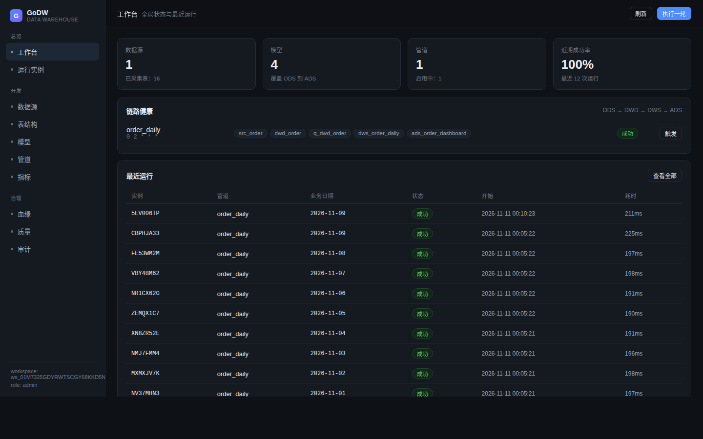
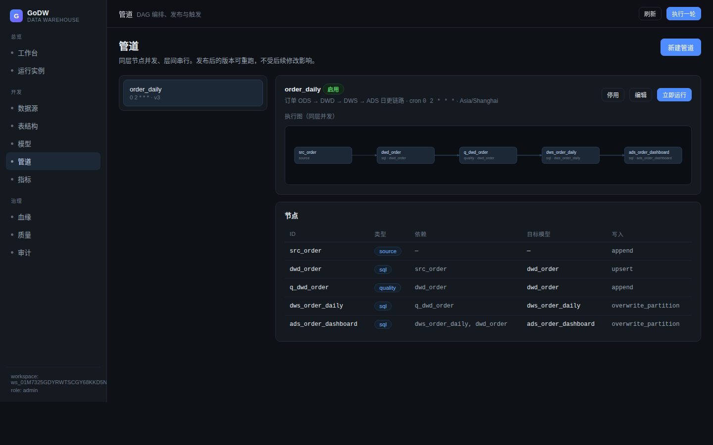
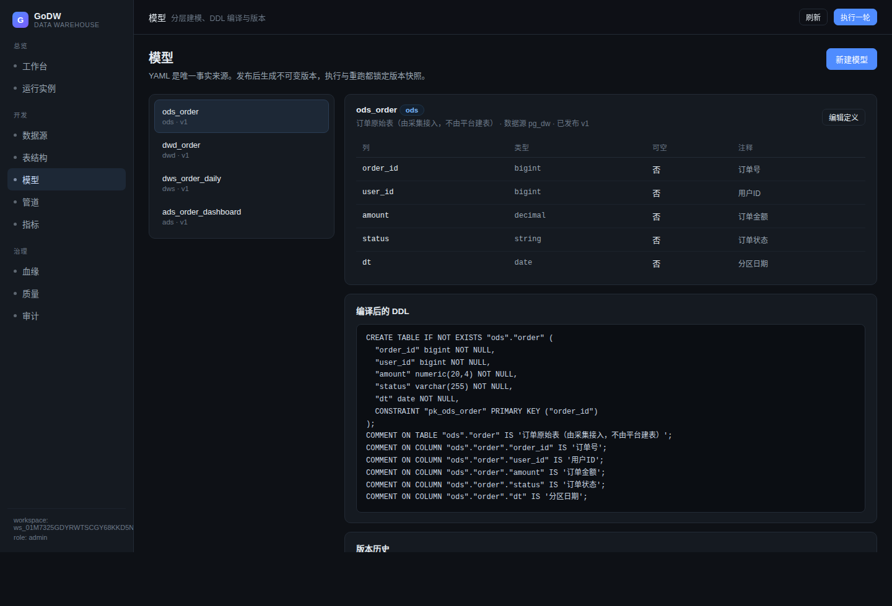
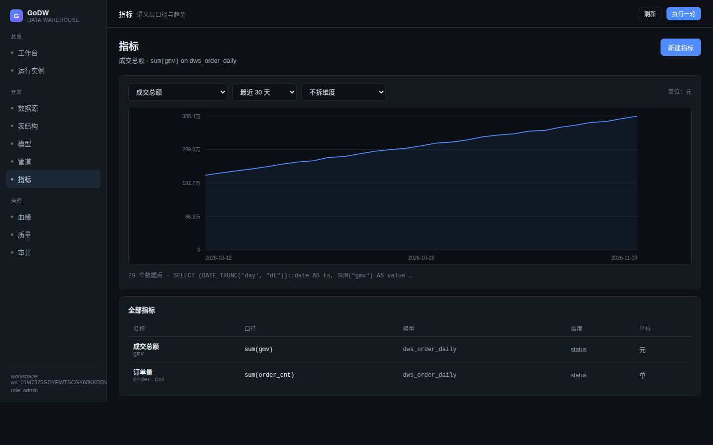
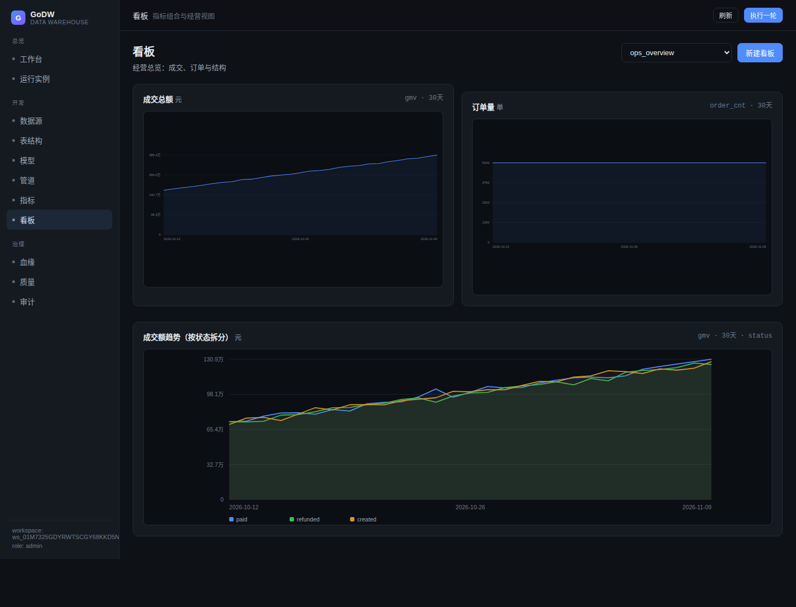
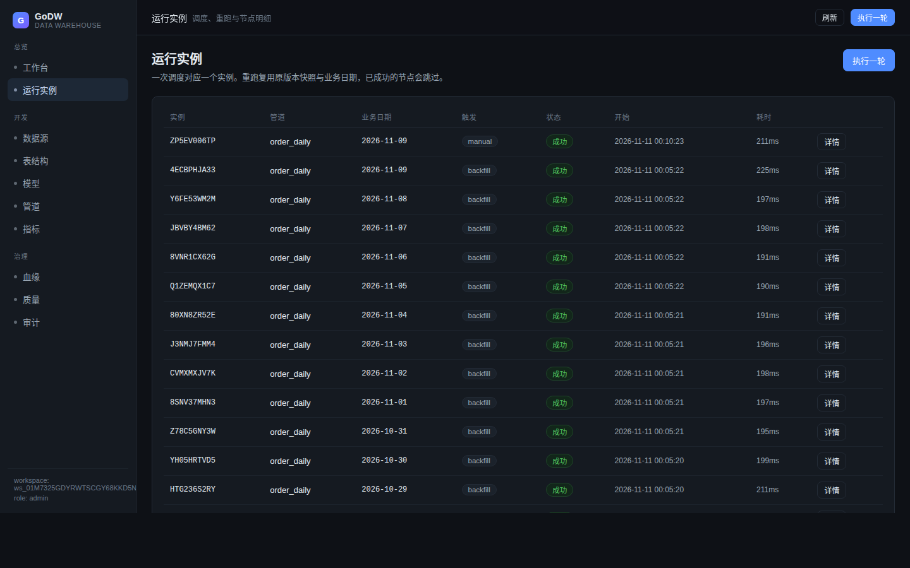

GoDW · 通用数据仓库系统（Go）
元数据驱动、引擎无关、单二进制可跑的数据仓库平台，覆盖
数据接入 → ODS → DWD → DWS → ADS → 看板全链路。建模、管道、质量、调度、血缘、界面都可配置、可版本化、可回滚。
当前状态：可运行。 不是设计稿——本文档描述的能力已经在仓库里实现并通过端到端验证（10 万行样例数据跑通四层链路，节点级结果、质量门禁、血缘、审计均可查）。
0. 五分钟跑起来
# 1) 起一个 PostgreSQL（元数据库与样例业务库共用即可）
docker compose -f deploy/docker-compose.dev.yaml up -d postgres
# 2) 配置：敏感项只走环境变量，不落盘
export GODW_DB_PASSWORD=godw
export GODW_AUTH_JWT_SECRET=$(openssl rand -hex 16)
# 3) 建表 → 自检 → 灌样例数据 → 发布模型与管道
make migrate
make doctor
make seed
# 4) 启动控制面（内嵌调度与执行器）
make run
# 浏览器打开 http://localhost:8080
没有 Docker 也可以：本机装好 PostgreSQL，改 config.dev.yaml 的 db.host/user/database，同样三行命令跑起来。
冒烟脚本会真的跑一遍完整链路并校验每个节点：
bash scripts/smoke.sh
1/5 健康检查
2/5 触发管道 order_daily（业务日期 2026-11-09）
3/5 触发执行
5/5 校验产物
src_order success rows=100000 21ms
dwd_order success rows=100000 560ms
q_dwd_order success rows=0 57ms
dws_order_daily success rows=3 87ms
ads_order_dashboard success rows=1 61ms
全部节点成功
冒烟通过
0.1 已经实现的能力
| 层 | 能力 | 关键实现 |
|---|---|---|
| 接入 | PostgreSQL / MySQL / ClickHouse 连接器，能力矩阵 + 连接池复用 | internal/connector、internal/dialect |
| 元数据 | 库表结构采集入库，字段类型/注释/行数/大小 | datasource + dataset 表、CollectMetadata |
| 建模 | YAML 定义模型 → 校验 → 编译 DDL → 版本化发布/回滚 | internal/modelc、model_version 快照 |
| 管道 | YAML 编排 DAG → 成环/依赖/参数校验 → 分层并发执行 | internal/pipeline/compile、node.Executor |
| 写入 | append / overwrite / upsert / overwrite_partition 四种策略，有事务则包事务 | 按 Capability 自动降级 |
| 调度 | 标准 5 段 cron、T-1 派发、幂等键、SKIP LOCKED 领取、租约心跳、僵尸回收 |
internal/scheduler、instance 状态机 |
| 质量 | not_null / unique / accepted_values / range / row_count / custom_sql，error 级阻断下游 | internal/quality |
| 血缘 | 提交管道时记录模型上下游，图查询与可视化 | lineage_edge |
| 治理 | JWT 登录、RBAC 写权限、凭证 AES-GCM 加密、审计日志 | internal/auth、cryptox |
| 语义层 | 指标定义（聚合白名单 + 维度校验）、时间序列查询、多指标看板 | internal/semantic |
| 界面 | 内嵌控制台：工作台、数据源、表结构、模型、管道、指标、看板、实例、血缘、质量、审计 | internal/api/http/ui（零构建，go:embed） |
| 交付 | 单二进制、migrate/doctor/apply/run/seed CLI、Compose、多阶段镜像、CI | cmd/、deploy/、.github/workflows |
界面
控制台随二进制内嵌，不需要单独部署前端。
| 工作台 | 管道编排 |
|---|---|
 |
 |
| 模型与 DDL | 指标趋势 |
|---|---|
 |
 |
| 看板 | 实例运维 |
|---|---|
 |
 |
进度
100 张任务卡中 38 张已完成（核心链路闭环），其余为增强项：OpenAPI 生成、列级血缘、多维下钻与看板、细粒度 RBAC、Helm/压测。清单与依赖见 runner/tasks.json，实现与设计的差异记录在 docs/03 §10。
0.2 设计文档与任务拆解
以下文档仍然有效，是实现的契约与后续迭代的路线图（100 张任务卡已转成机器可读清单）：
1. 为什么不是再造一个 Airflow
| 系统 | 值得借鉴 | 我们补齐的缺口 |
|---|---|---|
| Apache Airflow | DAG 调度、Operator 生态、回填 | Python 栈重、缺数仓分层语义、无内置建模与 BI |
| Dagster | 资产（Asset）思维、类型系统 | 学习曲线陡、Go 生态缺失 |
| dbt | 模型/测试/文档一体、SQL 优先 | 只管 T+D 转换，不管采集、调度与展示 |
| DolphinScheduler | 可视化编排、多租户 | 建模与语义层薄弱、插件开发成本高 |
| DataWorks / 阿里云 | 全链路分层与数据地图 | 闭源、绑定云厂商 |
| Metabase / Superset | 自助 BI、语义层 | 不做 ETL 与调度 |
GoDW 的定位：把「建模 DSL + DAG 编排 + 分层治理 + 语义层 BI」收进一个 Go 单体（可拆 worker），单二进制可跑，规模上能顶到万级日任务。
2. 六条通用性设计原则
- 一切皆元数据：数据源、模型、管道、质量规则、指标、看板全部是带版本的元数据对象；YAML 可导出、可
git diff、可apply。 - 引擎无关：
Connector+Dialect+Capability三层抽象，同一份模型/管道可跑在 PostgreSQL、MySQL、ClickHouse、Doris、DuckDB 上，方言差异由能力矩阵降级处理。 - 分层内建：
ODS/DWD/DWS/ADS不是命名约定，而是强约束——层间引用规则、命名前缀、分区规范、生命周期由编译器校验。 - 插件化：连接器、算子、质量规则、告警渠道、认证方式均通过注册表扩展，新增一种数据源不改核心代码。
- 可重跑即正确：每次写入带
run_id/bizdate审计列，写入策略保证幂等；重跑使用渲染快照，避免语义漂移。 - 多环境多租户：
workspace → env(dev/staging/prod)两级隔离，模型与管道一次定义、按环境绑定数据源。
3. 文档索引
| 文档 | 内容 | 读者 |
|---|---|---|
| docs/01-总体架构.md | 分层架构、组件职责、部署拓扑、技术选型与理由 | 全员 |
| docs/02-元数据模型.md | 核心表 DDL、索引、状态机、幂等键 | 后端 |
| docs/03-核心抽象与接口.md | Go 包结构、核心 interface、DSL 语法、API 契约 | 后端 |
| docs/tasks/E01-E02-基座与元数据.md | 工程基座、数据源接入、元数据采集 | 后端 |
| docs/tasks/E03-E04-模型与管道.md | 分层建模、DDL 编译、SQL 模板、写入策略 | 后端 |
| docs/tasks/E05-E06-调度与质量血缘.md | 调度执行、补数、质量门禁、列级血缘 | 后端 |
| docs/tasks/E07-E08-BI与治理.md | 语义层、查询 API、看板、RBAC、审计 | 后端 |
| docs/tasks/E09-E10-前端与交付.md | 可视化编排、运维中心、部署与压测 | 前端/运维 |
| docs/04-AI协作与验收规范.md | 任务卡怎么喂给 AI、编码红线、DoD、测试矩阵 | 全员 |
| docs/05-无人值守执行方案.md | 断点续跑、定时唤醒、失败升级的落地方案 | 运维/负责人 |
runner/ |
无人值守执行器：tick.py 状态机 + tasks.json + 进度板 |
运维 |
4. 里程碑
| 里程碑 | 范围 | 交付物（可演示） | 人日 |
|---|---|---|---|
| M1 地基 | E01 | make up && make migrate && godw doctor 全绿 |
11 |
| M2 数据进得来 | E02 | 接入 4 类数据源，元数据自动采集，表结构可视 | 19.5 |
| M3 模型立得住 | E03 | YAML 定义模型 → 一键生成 DDL → 发布/回滚 | 17 |
| M4 管道跑得通 | E04 | 可视化编排一条 ODS→DWD→DWS→ADS 管道并试跑 | 23 |
| M5 调度稳得住 | E05 | 定时调度、失败重试、补数、日志实时查看 | 26 |
| M6 数据信得过 | E06 | 质量规则 + 门禁 + 列级血缘 + 影响分析 | 18 |
| M7 业务看得懂 | E07 | 语义层指标、自助查询、拖拽看板、导出订阅 | 20.5 |
| M8 平台管得住 | E08 | 登录/RBAC/脱敏/审计/多租户 | 11.5 |
| M9 界面用得顺 | E09 | 全部前端页面，与后端联调完成 | 28 |
| M10 交付可运行 | E10 | 一键部署、样例数据集、压测报告、文档站 | 16.5 |
合计 191 人日（与 runner/tasks.json 逐卡汇总一致）。2 名后端 + 1 名前端 + AI 辅助，约 12–14 周。
关键路径：E01 → E02 → E03 → E04 → E05 → E07；E09 从 E04 起并行；E06/E08 可与 E05 并行。
5. 一条端到端样例（验收主线）
MySQL(业务库) --采集--> ods_order (ODS，按 dt 分区，原样保留 + 审计列)
│
清洗/去重/类型规范
▼
dwd_order_detail (DWD，明细，主键 order_id+sku_id)
│
按日/按店铺聚合
▼
dws_order_shop_1d (DWS，轻度汇总)
│
面向看板的宽表
▼
ads_order_dashboard (ADS)
│
语义层 dataset: 订单主题
▼
BI 看板：GMV / 客单价 / 退款率
这条链路会作为 M4/M5/M7 的联合验收用例，每日调度、可补数、可重跑、有质量校验、有血缘。
6. 现在怎么开始
# 查看包结构约定
cat docs/03-核心抽象与接口.md
# 领取第一张任务卡
cat docs/tasks/E01-E02-基座与元数据.md # T0101
每张任务卡的格式固定为：
#### Txxxx · 任务名 `优先级` `预估`
**目标**：一句话说清为什么做
**要点**：实现路径、关键算法、易错点
**产出**：要新建/修改的文件
**验收**：可自动执行的判定条件
7. 无人值守执行
任务卡已转成机器可读清单（100 条，runner/tasks.json），依赖是手工校准的硬依赖，关键路径 41 人日、最大并行宽度 9。配套一个带锁、带重试、带断点续跑的状态机：
cd /workspace/数据仓库
python3 runner/tick.py status # 总览
python3 runner/tick.py plan # 依赖分层 + 哪些任务能并行
python3 runner/tick.py next # 领取任务，生成 CURRENT.md
python3 runner/tick.py done --note "实现并通过测试" # 或 fail / handoff
python3 runner/tick.py report # 刷新 PROGRESS.md
单 worker 用 PROMPT.txt；要并行就建 3 个定时任务，分别用 PROMPT-worker.txt 并把 {WORKER} 换成 w1/w2/w3，每个 worker 在独立 git worktree 里干活，按文件范围自动错开。完整方案见 docs/05-无人值守执行方案.md。